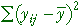
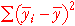

Notation
In the formulae in this page, the values in the i'th group are denoted
by yi 1, yi 2,
... . More generally, the j'th
value in the i'th group is called yij and
the
mean of the values in the i'th group is  .
.
Total variation
|  | The total sum of squares reflects the total variability of the response. |
The overall variance of all values (ignoring groups) is the total sum of squares divided by (n - 1).

|  | The sum of squares between groups measures the variability of the group means. |
Variation between groups is summarised by the differences between the group means and the overall mean. Note that the summation is over all observations in the data set.

| The sum of squares within groups quantifies the spread of values within each group. |
This is also called the residual sum of squares since it describes variability that is unexplained by differences between the groups. Note that the pooled estimate of the common variance, σ2, is the sum of squares within groups divided by (n - g).